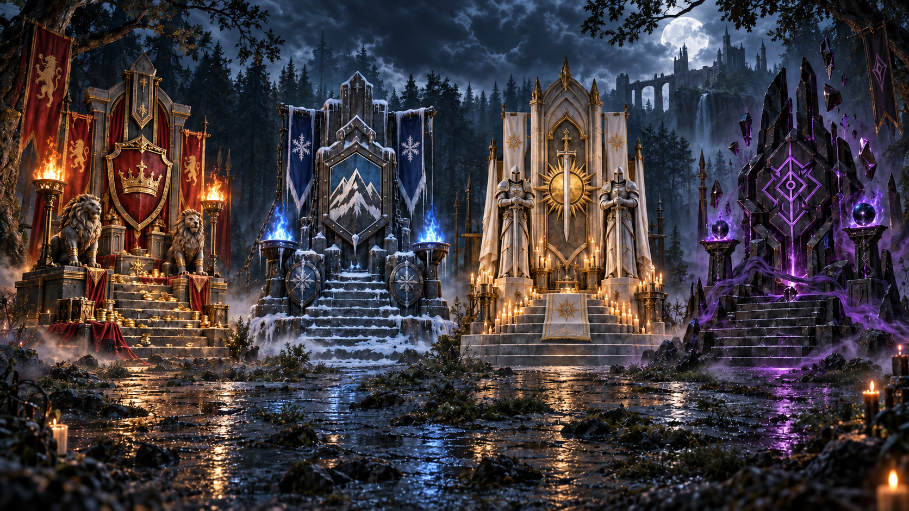

Укажите имя
Стартовый экран просит имя игрока перед переходом в меню комнат.
TODM Games / Браузерная версия
Выберите сторону и соберите комнату для игры в развивающейся онлайн-версии «Пробуждения Леса».
Доступно · закрытая альфа01 / Что это
«Пробуждение Леса» — стратегическая игра во вселенной «Сказок Мертвеца». Online — отдельная браузерная версия проекта TODM Games, а не страница настольной игры.
Публичная версия сейчас обозначена как закрытая альфа. В ней доступен вход по имени и подготовка комнаты; состав и правила самой партии могут меняться.
О настольной игре →02 / Как начать
Стартовый экран просит имя игрока перед переходом в меню комнат.
Создайте комнату на 2–4 игроков или присоединитесь по коду приглашения.
Откройте описание стороны и подтвердите выбор в комнате.
После выбора фракции можно нажать «Я готов» и ждать остальных участников.
03 / Фракции
В текущем интерфейсе комнаты представлены четыре фракции. У каждой открывается справочник с разделами «Особенности», «Герои», «Войска» и «Здания».

04 / Подтверждено в альфе
Создание комнаты, выбор числа участников, код для входа и отметка готовности.
Четыре доступные фракции с отдельными описаниями в игровом меню.
В интерфейсе можно просмотреть сведения об особенностях, героях, войсках и зданиях фракции.
Матч требует других участников. При проверке публичного интерфейса сама партия не была доступна, поэтому здесь не описаны её неподтверждённые механики.
05 / Проект в разработке
«Пробуждение Леса Online» продолжает развиваться. Механики, баланс и интерфейс могут изменяться по мере разработки. Эта страница описывает только то, что удалось подтвердить в открытой версии игры.